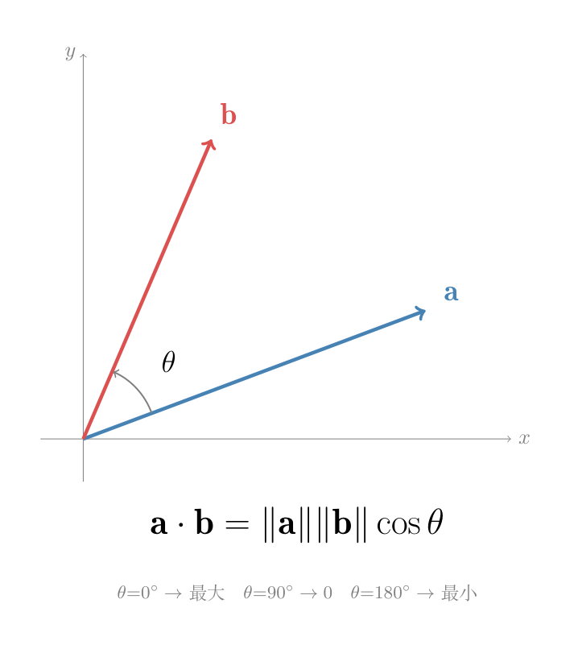

画面： 正午大太阳。你站在操场上，太阳在你头顶正上方。你的影子有多长？取决于你站得多直：笔直站 → 影子为一团（最短），斜躺 → 影子拉得老长。

这就是点乘的几何含义：两个向量各自有多长，乘起来，再按夹角打一个折。
也可以这样看：把 a "投"到 b 的方向上。投影怎么算？ a、投影、垂线构成直角三角形——a 是斜边，投影是邻边。直角三角形中，邻边 = 斜边 × cosθ，所以投影长度 = ‖a‖cosθ，再乘以 b 的长度。反过来也行——把 b 投到 a 上，再乘以 a 的长度。两种看法结果一样。
注意： 当 θ > 90° 时 cosθ < 0，「投影」落在 b 的反方向上，点乘为负——这说明两个向量总体上在「互相背离」。当 θ < 90° 时 cosθ > 0，投影在 b 的方向上，点乘为正——两个向量总体上在「互相帮助」。当 θ = 90° 时 cosθ = 0，投影长度为 0——两个向量垂直，谁也不影响谁。
$$\mathbf{a} \cdot \mathbf{b} = a_1b_1 + a_2b_2 + \cdots + a_nb_n = \|\mathbf{a}\|\,\|\mathbf{b}\|\,\cos\theta$$三步推导，只需要余弦定理：
第 1 步——画出三角形。 向量 $\mathbf{a}$ 和 $\mathbf{b}$ 的差 $\mathbf{a}-\mathbf{b}$ 构成三角形第三条边。余弦定理告诉我们第三条边的长度平方：
$$\|\mathbf{a} - \mathbf{b}\|^2 = \|\mathbf{a}\|^2 + \|\mathbf{b}\|^2 - 2\|\mathbf{a}\|\|\mathbf{b}\|\cos\theta$$第 2 步——用代数定义展开左边。 注意：为什么 $\|\mathbf{v}\|^2 = \mathbf{v}\cdot\mathbf{v}$？靠的是勾股定理——向量 $\mathbf{v}=(v_1, v_2)$ 是两个直角边，它的长度（斜边）$\|\mathbf{v}\| = \sqrt{v_1^2 + v_2^2}$，所以 $\|\mathbf{v}\|^2 = v_1^2 + v_2^2$。而点乘的代数定义是各分量相乘求和：$\mathbf{v}\cdot\mathbf{v} = v_1\times v_1 + v_2\times v_2 = v_1^2 + v_2^2$。两者相等——勾股定理把几何长度和代数分量串在了一起。
正式展开之前，先确认一件事——点乘为什么能用分配律和交换律？回看点乘的代数定义：$\mathbf{a}\cdot\mathbf{b}=a_1b_1+a_2b_2+\cdots$——就是一堆分量乘完再加。实数的乘法有交换律（$a_1b_1 = b_1a_1$），加法也有交换律（$a_1b_1+a_2b_2 = b_2a_2+a_1b_1$），所以 $\mathbf{a}\cdot\mathbf{b} = \mathbf{b}\cdot\mathbf{a}$。实数的乘法对加法有分配律（$a_1(b_1+c_1)=a_1b_1+a_1c_1$），所以 $(\mathbf{a}\pm\mathbf{b})\cdot\mathbf{c} = \mathbf{a}\cdot\mathbf{c} \pm \mathbf{b}\cdot\mathbf{c}$。点乘的运算律不是新东西——是实数运算律穿了向量外衣。有了这两条，逐层展开：
$$\begin{aligned} \|\mathbf{a} - \mathbf{b}\|^2 &= (\mathbf{a}-\mathbf{b})\cdot(\mathbf{a}-\mathbf{b}) \\ &= (\mathbf{a}-\mathbf{b})\cdot\mathbf{a} - (\mathbf{a}-\mathbf{b})\cdot\mathbf{b} &&\text{——分配律：先把右边的 }(\mathbf{a}-\mathbf{b})\text{ 拆开，分别点乘} \\ &= \mathbf{a}\cdot\mathbf{a} - \mathbf{b}\cdot\mathbf{a} - \mathbf{a}\cdot\mathbf{b} + \mathbf{b}\cdot\mathbf{b} &&\text{——分配律再拆左边：}(\mathbf{a}-\mathbf{b})\text{ 拆成 }\mathbf{a}\text{ 和 }-\mathbf{b} \\ &= \mathbf{a}\cdot\mathbf{a} - \mathbf{a}\cdot\mathbf{b} - \mathbf{a}\cdot\mathbf{b} + \mathbf{b}\cdot\mathbf{b} &&\text{——交换律：}\mathbf{b}\cdot\mathbf{a} = \mathbf{a}\cdot\mathbf{b} \\ &= \mathbf{a}\cdot\mathbf{a} + \mathbf{b}\cdot\mathbf{b} - 2(\mathbf{a}\cdot\mathbf{b}) &&\text{——合并同类项：}-\mathbf{a}\cdot\mathbf{b} - \mathbf{a}\cdot\mathbf{b} = -2(\mathbf{a}\cdot\mathbf{b}) \\ &= \|\mathbf{a}\|^2 + \|\mathbf{b}\|^2 - 2(\mathbf{a}\cdot\mathbf{b}) &&\text{——}\mathbf{v}\cdot\mathbf{v} = \|\mathbf{v}\|^2\text{（上面刚证）} \end{aligned}$$第 3 步——对比左右两边。 第 1 步和第 2 步都等于 $\|\mathbf{a}-\mathbf{b}\|^2$，所以它们相等：
$$\cancel{\|\mathbf{a}\|^2 + \|\mathbf{b}\|^2} - 2(\mathbf{a}\cdot\mathbf{b}) = \cancel{\|\mathbf{a}\|^2 + \|\mathbf{b}\|^2} - 2\|\mathbf{a}\|\|\mathbf{b}\|\cos\theta$$消去相同项：
$$\mathbf{a}\cdot\mathbf{b} = \|\mathbf{a}\|\|\mathbf{b}\|\cos\theta$$所以「对应分量乘完求和」和「长度×长度×夹角余弦」是同一个东西——不是分别定义，是余弦定理推导出来的等价关系。
拆开看：
三个情况一目了然： 同向 → 点乘最大（影子拉最长）；垂直 → 点乘 = 0（没有投影）；反向 → 点乘为负（影子"反方向"了）。
# 导入numpy科学计算库，别名np
import numpy as np
# np.array(列表) → 创建一维向量a，shape=(3,)
a = np.array([1, 2, 3])
# 同理创建向量b，shape=(3,)
b = np.array([4, 5, 6])
# np.dot(a, b)：对应位置相乘再求和 → 1×4 + 2×5 + 3×6 = 32
# np.dot是点乘函数，也可用 a @ b（Python 3.5+）
# 返回标量32——两个向量的点乘结果是一个数
dot = np.dot(a, b)
# f-string：花括号{}内是Python表达式，直接嵌入字符串
print(f"点乘 = {dot}")
# 验证几何公式：cosθ = (a·b) / (‖a‖ × ‖b‖)
# np.linalg.norm(v)：默认计算L2范数（欧几里得长度）√(v₁²+v₂²+...+vₙ²)
# 这里 norm(a) = √(1²+2²+3²) = √14 ≈ 3.742
# 这里 norm(b) = √(4²+5²+6²) = √77 ≈ 8.775
# 余弦=点乘/(长度乘积)
cos_theta = dot / (np.linalg.norm(a) * np.linalg.norm(b))
# :.3f = 保留3位小数 → cosθ ≈ 0.975 接近1=几乎同向
print(f"cosθ = {cos_theta:.3f}")画面： 一台数控机床。你把一块钢板（向量 $\mathbf{x}$）放进去，机器按照操作手册（矩阵 $A$）上的指令——每一行告诉机器「输出的这个分量，等于原料的各分量按这些系数组合」——输出一个加工好的零件（向量 $\mathbf{y}$）。矩阵就是这张操作手册。不同的矩阵 = 不同的加工方式：有的拉伸，有的旋转，有的剪切。
这就是矩阵最核心的功能：把一个向量变成另一个向量。 不同的矩阵会把向量扭到不同的位置、拉伸成不同的长度。
矩阵 $A$ 有 $m$ 行 $n$ 列，向量 $\mathbf{x}$ 有 $n$ 个分量。输出 $\mathbf{y} = A\mathbf{x}$ 有 $m$ 个分量，第 $i$ 个分量 = $A$ 的第 $i$ 行 与 $\mathbf{x}$ 做点乘：
$$y_i = A\text{ 第 }i\text{ 行} \;\cdot\; \mathbf{x}$$这个规则不是新东西——它就是把刚才学的点乘用在了矩阵的每一行上。 矩阵有 $m$ 行，就做 $m$ 次点乘，得到 $m$ 个输出分量。
拿具体例子算：
$$A = \begin{bmatrix} 2 & 1 \\ 0 & 3 \end{bmatrix}, \quad \mathbf{x} = \begin{bmatrix} 5 \\ 6 \end{bmatrix}$$第 1 个输出分量 = 第 1 行 · $\mathbf{x}$：
$$y_1 = \begin{bmatrix}2 & 1\end{bmatrix} \cdot \begin{bmatrix}5 \\ 6\end{bmatrix} = 2\times5 + 1\times6 = 16$$第 2 个输出分量 = 第 2 行 · $\mathbf{x}$：
$$y_2 = \begin{bmatrix}0 & 3\end{bmatrix} \cdot \begin{bmatrix}5 \\ 6\end{bmatrix} = 0\times5 + 3\times6 = 18$$拼起来：
$$A\mathbf{x} = \begin{bmatrix} 2 & 1 \\ 0 & 3 \end{bmatrix} \begin{bmatrix} 5 \\ 6 \end{bmatrix} = \begin{bmatrix} 16 \\ 18 \end{bmatrix}$$等号左边的写法要记住： $A\mathbf{x}$ 不写点乘符号（不是 $A\cdot\mathbf{x}$），矩阵和向量并排写就表示乘法。$\mathbf{x}$ 默认是列向量——竖着写。输入 (5,6) 变成了输出 (16,18)。
$(m \times n)$ 的矩阵 × $(n \times 1)$ 的向量 → $(m \times 1)$ 的向量。
直观理解：$A$ 的列数（$n$）= 输入向量的分量数，对不上就没法做点乘。$A$ 的行数（$m$）= 输出向量的分量数——有多少行，就输出多少个分量。
$A = \begin{bmatrix}2&1\\0&3\end{bmatrix}$ 把输入 (5,6) 扭到了 (16,18)。整个平面都被这张"操作手册"重新安排了——有些方向被拉伸，有些方向被旋转。
不同的矩阵做不同的事：
$$\begin{aligned} \begin{bmatrix} 1 & 0 \\ 0 & 1 \end{bmatrix} \begin{bmatrix} x_1 \\ x_2 \end{bmatrix} &= \begin{bmatrix} x_1 \\ x_2 \end{bmatrix} &&\text{——单位矩阵：什么也不做} \\[8pt] \begin{bmatrix} k & 0 \\ 0 & k \end{bmatrix} \begin{bmatrix} x_1 \\ x_2 \end{bmatrix} &= \begin{bmatrix} kx_1 \\ kx_2 \end{bmatrix} &&\text{——缩放矩阵：均匀放大/缩小 k 倍} \\[8pt] \begin{bmatrix} 0 & -1 \\ 1 & 0 \end{bmatrix} \begin{bmatrix} x_1 \\ x_2 \end{bmatrix} &= \begin{bmatrix} -x_2 \\ x_1 \end{bmatrix} &&\text{——旋转矩阵：逆时针转 90°} \end{aligned}$$以后学到特征值和特征向量时，会深入讲不同矩阵把平面"怎样扭"——哪里是拉伸方向，哪里是压缩方向。
# 导入numpy科学计算库，别名np
import numpy as np
# np.array(嵌套列表) → 创建2×2矩阵——操作手册
A = np.array([[2, 1],
# A[0,:]=[2,1]为第0行，A[1,:]=[0,3]为第1行
[0, 3]])
# 一维向量，shape=(2,) —— 输入的"原料"
x = np.array([5, 6])
# @ 是 Python 3.5+ 的矩阵乘法运算符（等价于 np.dot(A, x)）
y = A @ x
# A(2,2) @ x(2,) → y(2,)
# y[0] = A第0行·x = 2×5+1×6 = 16
# y[1] = A第1行·x = 0×5+3×6 = 18
# 输出: A·x = [16 18] —— 向量(5,6)被扭成(16,18)
print(f"A·x = {y}")
# 单位矩阵：对角线上全是1，其余位置全是0 —— 乘任何向量都不变
# np.eye(n)：创建n×n单位矩阵 [[1,0],[0,1]]
I = np.eye(2)
# 输出: I·x = [5 6] ← 原封不动，单位矩阵"什么也不做"
print(f"I·x = {I @ x}")
# 旋转90°矩阵：逆时针转 —— 把坐标系旋转π/2弧度
# 旋转矩阵：(x,y) → (-y,x)，逆时针90°
R = np.array([[0, -1],
# 第0行 [0,-1]：输出x分量 = -输入y
[1, 0]])
# 第1行 [1, 0]：输出y分量 = +输入x
# 输出: R·x = [-6 5] ← (5,6)逆时针转了90°到(-6,5)
print(f"R·x = {R @ x}")画面： 工厂里一条生产线。第一台机器把原材料处理成半成品（$A$ 的变换），第二台机器把半成品加工成成品（$B$ 的变换）。两台机器首尾相连——这就是 $C = BA$。矩阵乘就是两张"操作手册"的接力。
两个矩阵相乘：
$$A = \begin{bmatrix} 2 & 1 \\ 0 & 3 \end{bmatrix}, \quad B = \begin{bmatrix} 1 & 0 \\ 4 & 2 \end{bmatrix}$$算 $C = BA$。$C$ 的第 $i$ 行第 $j$ 列 = $B$ 的第 $i$ 行 与 $A$ 的第 $j$ 列 做点乘：
$$c_{ij} = B \text{ 第 } i \text{ 行} \;\cdot\; A \text{ 第 } j \text{ 列}$$逐个算：
$$\begin{aligned} c_{11} &= B\text{ 第1行} \cdot A\text{ 第1列} = \begin{bmatrix}1 & 0\end{bmatrix} \cdot \begin{bmatrix}2 \\ 0\end{bmatrix} = 1\times2 + 0\times0 = 2 \\[8pt] c_{12} &= B\text{ 第1行} \cdot A\text{ 第2列} = \begin{bmatrix}1 & 0\end{bmatrix} \cdot \begin{bmatrix}1 \\ 3\end{bmatrix} = 1\times1 + 0\times3 = 1 \\[8pt] c_{21} &= B\text{ 第2行} \cdot A\text{ 第1列} = \begin{bmatrix}4 & 2\end{bmatrix} \cdot \begin{bmatrix}2 \\ 0\end{bmatrix} = 4\times2 + 2\times0 = 8 \\[8pt] c_{22} &= B\text{ 第2行} \cdot A\text{ 第2列} = \begin{bmatrix}4 & 2\end{bmatrix} \cdot \begin{bmatrix}1 \\ 3\end{bmatrix} = 4\times1 + 2\times3 = 10 \end{aligned}$$拼起来：
$$C = BA = \begin{bmatrix} 1&0 \\ 4&2 \end{bmatrix} \begin{bmatrix} 2&1 \\ 0&3 \end{bmatrix} = \begin{bmatrix} 2 & 1 \\ 8 & 10 \end{bmatrix}$$算完之后回头看为什么是这个规则——答案就在上一节的「矩阵×向量」里。
上一节讲了：$A\mathbf{x}$ 是把向量 $\mathbf{x}$ 扭一次。现在有两台机器——先用 $A$ 扭，再用 $B$ 扭。拿一个具体向量验证：
两步走： 先算 $A\mathbf{x}$（第一台机器，矩阵×向量），再把结果交给 $B$（第二台机器）：
$$A\mathbf{x} = \begin{bmatrix}2&1\\0&3\end{bmatrix}\begin{bmatrix}5\\6\end{bmatrix} = \begin{bmatrix}16\\18\end{bmatrix}$$ $$B(A\mathbf{x}) = \begin{bmatrix}1&0\\4&2\end{bmatrix}\begin{bmatrix}16\\18\end{bmatrix} = \begin{bmatrix}16\\100\end{bmatrix}$$一步走： 用 $C = BA$ 直接把 $\mathbf{x}$ 扭到位：
$$C\mathbf{x} = \begin{bmatrix}2&1\\8&10\end{bmatrix}\begin{bmatrix}5\\6\end{bmatrix} = \begin{bmatrix}2\times5+1\times6\\8\times5+10\times6\end{bmatrix} = \begin{bmatrix}16\\100\end{bmatrix} \;\checkmark$$两步走和一步走结果一样。所以「行×列」不是硬记的公式——它是 $B$ 和 $A$ 作为变换接力时自然出现的计算方式。$B$ 的第 $i$ 行决定「中间结果（$A\mathbf{x}$）的各分量怎样组合成第 $i$ 个输出」，$A$ 的第 $j$ 列决定「输入的第 $j$ 个分量如何分配到各中间结果」，两者的点乘恰好就是 $c_{ij}$——也就是「不做中间产物、直接一步到位」的规则。
铁律：内维咬合。 $(m, \cancel{n}) \times (\cancel{n}, p) = (m, p)$。$A$ 的列数 = $B$ 的行数，否则接口对不上。
import numpy as np
# np.array(嵌套列表) → 创建2×3矩阵，2行3列
A = np.array([[1,2,3], [4,5,6]])
# 创建3×2矩阵——B的行数3 = A的列数3 ✓ 内维咬合
B = np.array([[7,8], [9,10], [11,12]])
# 矩阵乘法：(2,3) @ (3,2) → (2,2)
C = A @ B
# 内维3被"吃掉"，外维(2,2)为结果形状
# \n = 换行符，C打印为2×2矩阵
print(f"C = A@B:\n{C}")
# C[0,0] = 1×7 + 2×9 + 3×11 = 7+18+33 = 58 —— A第0行 · B第0列
# C[0,1] = 1×8 + 2×10 + 3×12 = 8+20+36 = 64 —— A第0行 · B第1列
# C[1,0] = 4×7 + 5×9 + 6×11 = 28+45+66=139 —— A第1行 · B第0列
# C[1,1] = 4×8 + 5×10 + 6×12 = 32+50+72=154 —— A第1行 · B第1列定义： 把矩阵的行变成列，列变成行。记作 $A^T$（读作「A 转置」）。
$$A = \begin{bmatrix} 1 & 2 & 3 \\ 4 & 5 & 6 \end{bmatrix}, \qquad A^T = \begin{bmatrix} 1 & 4 \\ 2 & 5 \\ 3 & 6 \end{bmatrix}$$$A$ 是 2×3，$A^T$ 是 3×2。转置把形状 $(m,n)$ 变成 $(n,m)$。 换个角度看：$A$ 的第 1 列 $[1,4]$ 变成了 $A^T$ 的第 1 行——行和列互换了位置。
如果一个矩阵转置后等于自己——$A = A^T$——就叫对称矩阵。
$$A = \begin{bmatrix} 1 & 3 \\ 3 & 2 \end{bmatrix}, \qquad A^T = \begin{bmatrix} 1 & 3 \\ 3 & 2 \end{bmatrix} = A$$对角线是镜子：$a_{12} = a_{21}$（对称位置上的数相等）。对称矩阵必须是方阵（行数=列数）。对称矩阵在实际应用里到处出现。后面 00-05（特征值与特征向量）会反复用到。
# 转置演示：用 .T 属性翻转矩阵的行列
# 导入numpy，别名np
import numpy as np
# np.array(嵌套列表) → 创建2×3二维数组
A = np.array([[1, 2, 3],
# 第一行：1,2,3
[4, 5, 6]])
# 第二行：4,5,6
# .shape 返回元组 (行数, 列数) → (2, 3)
print(f"A 形状: {A.shape}")
# .T 属性返回转置矩阵 → 行列互换，不修改原矩阵
AT = A.T
# 转置后形状 → (3, 2)
print(f"A^T 形状: {AT.shape}")
# 打印 A^T：第一列变第一行
print(f"A^T =\n{AT}")
# 验证 (A^T)^T = A
print(f"(A^T)^T = A? {np.allclose(A.T.T, A)}")
# 对称矩阵：转置等于自身
S = np.array([[1, 3],
[3, 2]])
print(f"S 对称? {np.allclose(S, S.T)}")
到了 00-07（SVD）开始，公式里会出现这个符号：
$$\sum_{i=1}^{n} x_i = x_1 + x_2 + \cdots + x_n$$读作「从 i=1 加到 i=n」。$\Sigma$（希腊字母 Sigma，大写）就是求和的意思。
拆开看：
举例：$\sum_{i=1}^{4} i^2 = 1^2 + 2^2 + 3^2 + 4^2 = 1+4+9+16 = 30$。
双下标求和（两个 $\Sigma$ 叠在一起）：
$$\sum_{i=1}^{m}\sum_{j=1}^{n} A_{ij}$$意思是「把矩阵所有元素加一遍」——先固定 i=1，把 j 从 1 加到 n（第一行求和）；再 i=2，第二行求和……直到第 m 行。
和 $\Sigma$ 对称——$\Pi$（希腊字母 Pi，大写）表示连乘：
$$\prod_{i=1}^{n} x_i = x_1 \times x_2 \times \cdots \times x_n$$举例：$\prod_{i=1}^{4} i = 1\times2\times3\times4 = 24$（就是 4!，阶乘）。后面讲特征值之积 = 行列式（$\prod \lambda_i$）时会用到。
画面： 老师发卷子。讲台上只有一份卷子，但老师把它"复印"了 40 份，每人一份——每一份的内容一模一样。广播就是 numpy 帮你自动"复印"小数组去匹配大数组的形状。
注意："复印"只是比喻——numpy 不是真的在内存里复制 40 份数据，它只是假装有那么多份。实际内存里只有一份。所以广播不浪费内存。
两个数组能不能广播，走这三步：
import numpy as np
# np.array(嵌套列表) → shape=(3,1)，3行1列的列向量
x = np.array([[1], [2], [3]])
# 每一行是一个独立子列表，如 [1] → 一列
# np.array([[...]]) → shape=(1,4)，1行4列的行向量
y = np.array([[10, 20, 30, 40]])
# 单层外层列表 + 内层一个列表放4个数
# 广播三步法：
# 步骤1: 从右向左对齐 → (3, 1) 和 (1, 4)
# 步骤2: 短的补1 → 无需补，都是2维
# 步骤3: 逐维比较 → 第1维: 1 vs 4 → 1可复印成4 ✓
# 第0维: 3 vs 1 → 1可复印成3 ✓
# 结果shape: (3, 4)
# 广播加法：x(3,1)沿列方向复制4份 + y(1,4)沿行方向复制3份
z = x + y
# 相当于把x的每列重复4次，y的每行重复3次，然后逐元素加
# 输出(3,4)矩阵：x的第1行+[10,20,30,40]=[11,21,31,41]
print(z)
# x的第2行+[10,20,30,40]=[12,22,32,42]
# x的第3行+[10,20,30,40]=[13,23,33,43]一个矩阵加一个向量，能不能广播？
import numpy as np
# np.array(嵌套列表) → shape=(3,2)，3行2列矩阵
A = np.array([[1,2],[3,4],[5,6]])
# np.array(列表) → shape=(2,)，一维向量，rank=1
v = np.array([10, 20])
# 广播三步法：
# 步骤1-2: 短的补1 → A: (3,2), v: (2,) → 左边补1得 (1,2)
# 步骤3: 逐维比较 → 第1维: 2 vs 2 → 相等 ✓
# 第0维: 3 vs 1 → 1可复印成3 ✓
# 结果shape: (3,2)
# 含义：v沿第0维（行方向）复制3行，然后和A逐元素相加
# A(3,2) + v广播后(3,2) → 输出:
print(A + v)
# [[11 22] # A[0,:]=[1,2] + v=[10,20]
# [13 24] # A[1,:]=[3,4] + v=[10,20]
# [15 26]] # A[2,:]=[5,6] + v=[10,20]为什么这个会报错？过一遍三步：
import numpy as np
# np.array(嵌套列表) → shape=(3,2)，3行2列矩阵
A = np.array([[1,2],[3,4],[5,6]])
# np.array(列表) → shape=(3,)，一维向量，长度=3
w = np.array([10, 20, 30])
# 广播三步法：
# 步骤1-2: 短的补1 → A: (3,2), w: (3,) → 左边补1得 (1,3)
# 步骤3: 逐维比较 → 第1维: 2 vs 3 → 2≠3 且都不是1 ❌ 炸了！
# 不用再看第0维了——ValueError: operands could not be broadcast together
# 关键教训：广播看每一维的数值，不是数组总长度！(3,)虽然长度=3和(3,2)的行数3一样
# 但对齐后w变成(1,3)，第1维是3，和A的2对不上关键教训： 广播看的是每一维的数值，不是看数组里一共有几个数。(3,) 虽然长度和 (3,2) 的行数一样，但广播对齐后它变成了 (1,3)——第 1 维是 3，和对方的 2 对不上，所以炸了。
同样的 rank，但每一维都对不上：
# (3, 2) + (2, 3) —— 两个矩阵都有2维，对齐后：
# 第1维: 2 vs 3 → 2≠3，都不是1 ❌
# 第0维: 3 vs 2 → 3≠2，都不是1 ❌
# 两维都不行，彻底炸——ValueError| 左边 | 右边 | 对齐后 | 通过？ | 原因 |
|---|---|---|---|---|
| (3,1) | (1,4) | 1→4,3→3 | ✅ | 各有 1 维可复印 |
| (3,2) | (2,) | (3,2)vs(1,2) | ✅ | 1 维复印, 2=2 |
| (3,2) | (3,) | (3,2)vs(1,3) | ❌ | 2≠3, 都不是1 |
| (5,) | (5,1) | (1,5)vs(5,1) | ✅ | 1→5, 5→5 |
| (4,3) | (3,) | (4,3)vs(1,3) | ✅ | 3=3, 1→4 |
| (3,2) | (2,3) | — | ❌ | 两维都不行 |